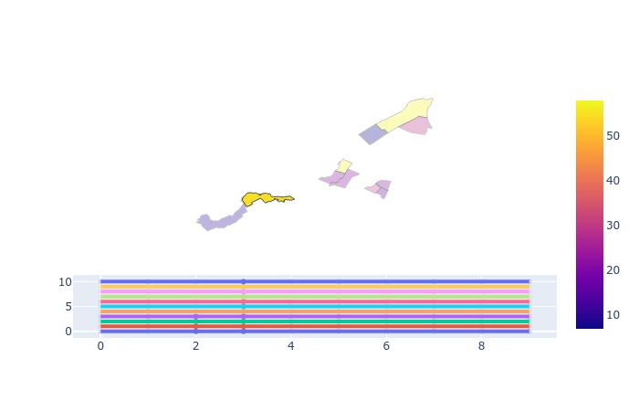

Import libs:
import pandas as pd
import numpy as np
import plotly.graph_objects as go
import plotly.express as px
from plotly.subplots import make_subplots
from ipywidgets import widgets
Load toy geo data:
%run -i 'funs.py'
df = px.data.election().reset_index()
geojson = px.data.election_geojson()
# only take ten districts:
df = df[0:11]
# correct different spelling of one district in the 2 objects:
df.loc[df['district'] == '112-DeLorimier', 'district'] = '112-De Lorimier'
# only take the polygons of the districts in df:
geojson['features'] = [feature for feature in geojson['features'] if feature['properties']['district'] in df.district.array]
Create toy time series data (very hacky):
def create_ts_data(df):
tag = pd.Series(np.arange(10))
tage = pd.concat([tag] * len(df.district))
df_ts = pd.DataFrame(df['district'].append([df['district']]*9))
df_ts['index_orig'] = df_ts.index
df_ts = df_ts.reset_index()
df_ts['tag'] = tage.sort_values().array
df_ts['randNumCol'] = df_ts['index_orig']#np.random.randint(1, 60, df_ts.shape[0])
return(df_ts)
df_ts = create_ts_data(df)Create plotly figure:
# Create toy value for coloring the choropleths (actually this has to be derived from the time series data):
df['col'] = np.random.randint(1, 60, df.shape[0])
# create choropleth object:
choro = go.Choropleth(geojson = geojson,
z = df.col,
locations = df.district,
featureidkey = "properties.district",
selected = {'marker': {'opacity': 1}},
unselected = {'marker': {'opacity': 0.3}}
)
# create line plot object:
linep = px.line(df_ts, x='tag', y='randNumCol', color='district')
# Create a figure with 2 subplots:
fig = make_subplots(
rows=2, cols=1,
row_heights=[0.7, 0.3],
specs=[[{"type": "choropleth"}],
[{"type": "scatter"}]])
fig.add_trace(
choro,
row=1, col=1
)
for i in range(len(linep['data'])):
fig.append_trace(linep['data'][i], col=1, row=2)
fig.update_traces(mode='markers+lines', col=1, row=2)
fig.update_geos(fitbounds="locations", visible=False)
fw = go.FigureWidget(
fig
)
fw.update_layout(
dragmode='lasso',
hovermode='closest',
showlegend=False)
# (comment out all the following to see how weird the subplots are coupled on selection events)
# selection events:
# choropleth is the first trace;
# every line in line plot is an individual trace (this makes it slow):
polygons = fw.data[0]
scatter = fw.data[1:(len(df_ts)+1)]
# function to update the line width on selection
# (it works when selecting line points,
# when selecting polygons, not the correct lines are selected):
def update_line(trace, points, selector):
if points.point_inds:
trace['line']['width'] = 4
# poly_feats = polygons.geojson['features']
# district_names = [feature['properties']['district'] for feature in poly_feats]
# dist_inds = district_names.index(trace['name'])
# fw.data[0].selectedpoints = dist_inds
# try to update polygons when selecting lines, doesn't work:
def choro_update(trace, points, selector):
if trace['name'] == 'trace 0':
sel_inds = np.array(pd.Series([list(i['selectedpoints'] or []) for i in scatter]).astype(bool).astype(int))
fw.data[0].selectedpoints = sel_inds
# apply select events to the figure widget
# (not sure if batch_update() changes anything):
with fw.batch_update():
for i in range(len(scatter)):
scatter[i].on_selection(update_line)
polygons.on_selection(choro_update)
fw